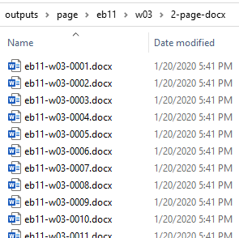

Container for Word .docx page files created by ABBYY FineReader.
This folder contains the DOCX files created by ABBYY FineReader, with one file per print page (150-250 files). Later in the
process, we generate separate files for each entry, rather than each page, so we use
folder names to differentiate the page files from the
entry files.Figure: 2-page-docx folder

DOCX file names use the convention: edition, section, page-number (1-250). Thus the file
eb09-r01-0005.docx contains the text of the fifth page in the
first section of the letter "R" for the ninth edition.
Note: Originally, we output files from AFR as HTML,
and you may encounter some folders that have a 2-page-html label.
In late 2018, we found a flaw in the output routine for HTML; it
often failed to recognize caps/small-caps formatting, which is used in the entry terms
of many editions. So we switched to its DOCX output format, which
retains that formatting properly. In the end, it turned out to be a fortunate switch;
DOCX uses Microsoft's Open Office XML format, a series of zipped
XML files that transform well into TEI.